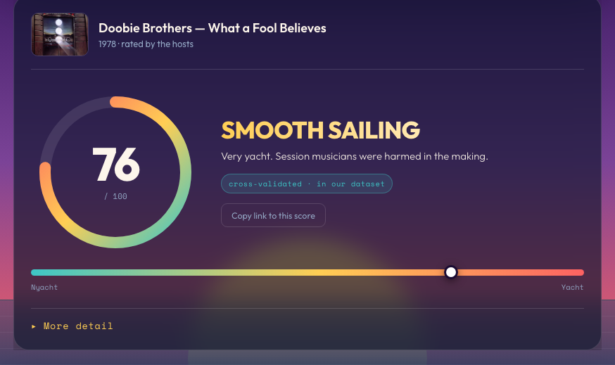
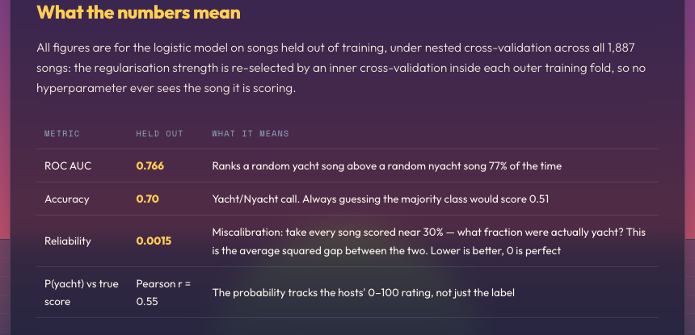

Yachtness Score
I spent the last few weekends building something deeply unserious. It is called Yachtness Score, and it listens to any song and tells you, on a scale from 0 to 100, how much it sounds like yacht rock.
Wait, what is yacht rock?
Yacht rock is the smooth, studio-polished soft rock made roughly between 1976 and 1984. Think Steely Dan, Michael McDonald, Christopher Cross. Warm Rhodes pianos, expensive session musicians, jazzy chords, and not a single rough edge anywhere. The name started as a joke about the kind of music rich people presumably play on boats, and then the joke became a genre, and now the genre has scholars.
The main scholars are the hosts of the podcast Yacht or Nyacht?, who rate songs on a 0 to 100 scale and draw a hard line at 50. Above the line, yacht. Below it, "nyacht." Their ratings are argued over at length and gloriously subjective, which is exactly what makes them fun training data.
The idea
The hosts have rated thousands of songs by ear. I wanted to know if a model could learn to hear whatever it is they hear. So I trained one on their ratings, and now you can search any song and get back a calibrated probability dressed up as a score, with verdicts running from LANDLOCKED to MAXIMUM YACHT. I also wrote a one-liner for every single score from 0 to 100, because if you are going to build something silly you should commit. "Take On Me" scores a 3: "If smoothness were water this would be a desert. Nyacht."

How it works
The pipeline is short, and every number here comes from the site's own method page:
- Ground truth. About 1,900 songs rated by the Yacht or Nyacht? hosts, using each song's average host score as the label.
- Audio. A 30-second preview from Deezer, matched only when artist and title both agree. Fuzzy matches get thrown away rather than risked.
- Features. The clip goes through MERT-v1-95M, a music foundation model. I mean-pool all 13 of its transformer layers over time, which gives 9,984 numbers describing how the recording sounds.
- Classifier. Five L2-regularised logistic regressions, one per cross-validation fold, whose probabilities get averaged into the final P(yacht).
So it is a big audio encoder with a deliberately boring linear model on top, plus honest nested cross-validation so no song is ever scored by a model that saw it during training. As a statistician I feel contractually obligated to mention that last part.
Does it work?
Better than I expected for such a fuzzy target. On held-out songs it gets the yacht/nyacht call right about 70% of the time, where always guessing the majority class would get you 51%. The ROC AUC is 0.766, meaning it ranks a random yacht song above a random nyacht song 77% of the time. And here is my favorite part: the model was trained only on a yes/no label, but its probability still correlates with the hosts' full 0 to 100 scores at r = 0.55. It recovers more than it was asked to learn.
The probabilities are also honestly calibrated. Of the songs the model calls 30%, close to 30% really are yacht. So the number on the dial reads as genuine confidence, not just a ranking.

Where it fails
It is confident and correct at the extremes. Real yacht rock lands high, and aggressive or lo-fi or acoustic music lands low. The middle is another story. A score near 50 is close to a coin flip, and fittingly, the songs that land there tend to be the same ones the hosts argue about on the show.
Its most charming failure is that it over-rates polished music that is not yacht. Japanese city pop fools it. Slick modern R&B fools it. Anything with a Rhodes, tasteful reverb, and session-grade playing can sneak aboard, because the model hears production, not genre and not era. It judges the sound, and nothing else.
Try it
Search a song you love and see where it lands. There are also leaderboards with the 50 yachtiest and 50 driest songs the model has ever rated. It is free, a little silly, and occasionally insightful.
Score a song at yachtness.org →
Cite this post
If you reference this post, please use:
@misc{maiapolo2026yachtness,
author = {Maia Polo, Felipe},
title = {Yachtness Score},
year = {2026},
month = {July},
doi = {10.5281/zenodo.21502652},
url = {https://felipemaiapolo.github.io/blog-yachtness-score.html}
}An archived copy of this post lives at doi.org/10.5281/zenodo.21502652.
Yachtness Score is an unaffiliated hobby project. The underlying song ratings belong to the hosts of Yacht or Nyacht?.